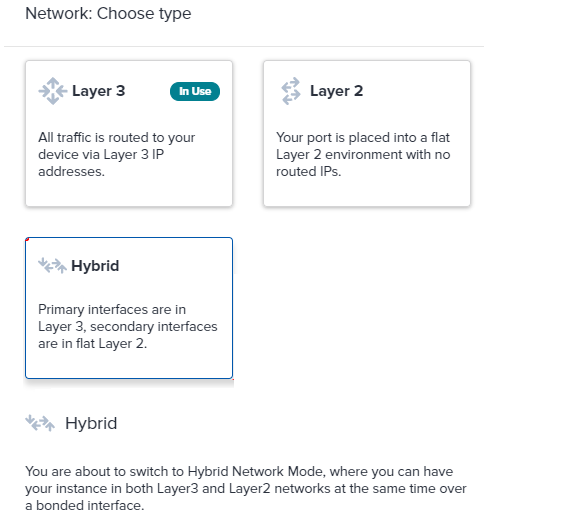
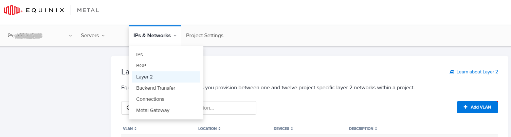
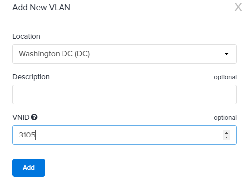
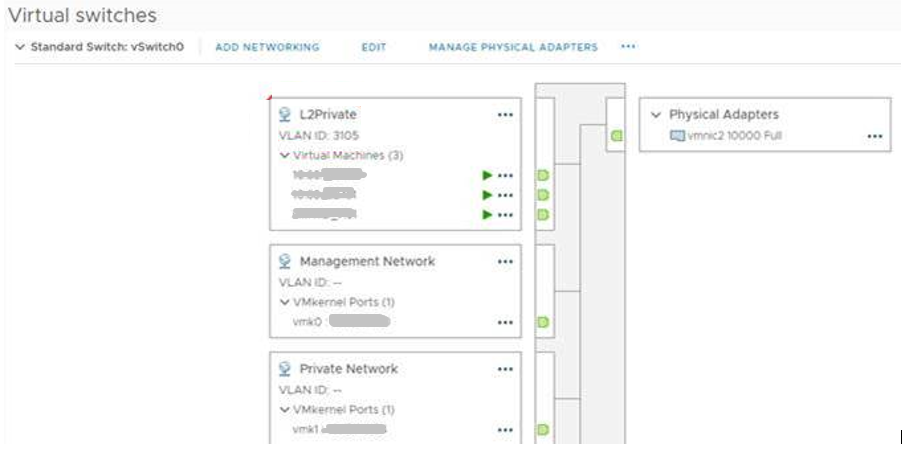

[Equinix] Bare Metal as-a-service 体验之网络重新规划
应用程序架构
我们的应用程序充当了一个数据消费者，运行在 vSphere 集群之上，而数据，放在我们位于 Equinix Co-location 数据中心的企业级存储上。如何从 Equinx Metal 访问到 Equinix Co-location 数据中心将在下一篇文章中展开，本文的焦点，放在应用程序与 Equinx Metal 网络的相互适应上。
为了便于操控大量的数据消费者，我们通过 kubernetes operator，定义并重写了管理数据消费者的逻辑，把基于不同协议（NFS, SMB, S3）的数据消费者做成 K8S 资源，并通过 controller 来实现其行为模式。同时我们开发了一个自动化框架，一方面用于自动部署 Kubernetes cluster，另一方面用于配合 operator 实现对数据消费者的批量生成和管理。
这里可能有个针对架构的疑问：既然 Equinix Metal 已经提供裸机的 provisioning，为什么不直接在上面部署 kubernetes 以及应用，而要在中间加上一层 vSphere Cluster？主要因为我们的技术栈偏向于 VMWare，而且在 vSphere Cluster 上，毕竟更加灵活。
应用程序与 Equinix Metal 网络的冲突
前面一篇说到，Equinix Metal 默认以 Layer 3 的方式为 server 提供可用 IP 并配置路由，所以每个 server 所分配到的 IP subnet 都是独立的，并且 server 与 server 之间的 IP subnet 相互不能有重叠。换句话说，每个 ESXi 上的 VM 只能使用所在 ESXi server 分配到的 IP subnet. 而我们的自动化框架，并不是按这样的网络条件开发的，没有处理 IP subnet 与 ESXi server 的对应关系，只是简单地让所有 VM 从一个大的 pool 中获取 IP 地址。这样带来的问题是，通过我们的 automation 框架在某台 ESXi server 上生成的 VM， 有可能拿到另外一台 ESXi server 的 subnet 中的 IP，这样就无法正常工作了。
应用程序与 Equinix Metal 网络的和解
当然我们可以修改 automation 框架来适应这个问题，但是作为更普遍的用法，应该有个扁平的环境容纳相关的 ESXi server，让所有这些 ESXi server 上的 VM 处于网络的无差别化之中。事实上 Equinix Metal 提供了这样的网络环境，即 Equinix Metal Layer 2.
Layer 2 并不是 Equinix Metal 的默认网络环境，需要手动配置。涉及到以下几个方面：
Server 上的网络类型
在 server 上，可以要求网络端口处于纯 Layer 2 环境，或者 Hybrid 环境中。所谓 Hybrid 环境，就是管理网段依然保持 Layer 3 模式，而将数据网络置于 Layer 2 之中。这正是我们希望的，毕竟如果把管理网络也放进 Layer 2，那么不得不还需要搭配网关，或者 NAT，一堆额外的配置。
为 Layer 2 网络添加 VLAN
在 Equinix Metal 的 portal 里面，可以任意添加和配置各种网络元素：
添加 VLAN 的同时，指定该 VLAN 在哪个数据中心范围生效，以及相应的 VLAN ID:
经过以上配置，达到的效果是：server 被连入了 Equinix Metal 数据中心的交换机，而交换机上的端口为二层配置，并且打通了 Vlan 3105. 整个过程，不需要动任何硬件，Equinix 已经全部实现了 software defined.
ESXi 上的相应配置
接下来，需要在 server 的 OS 层面，让发送的数据包都带上 tag 3105. 具体来说，在 vSwitch 中添加一个 port group，赋予 VLAN ID 3105. 之后生成的 VM，只需要放在这个 port group 即可。
经过以上网络调整，kubernetes operator 生成的 VM，无论在哪个 ESXi上，都可以共享一个大的二层 private 网络了。
至此，上一篇文章和本篇描述的过程，让我们位于 Equinix Metal 环境的节点，已经完全具备运行数据消费者应用的条件了。下一篇文章，将重点讨论 Equinix Metal 数据中心的应用程序如何访问 Equinix Co-location 数据中心里的数据。